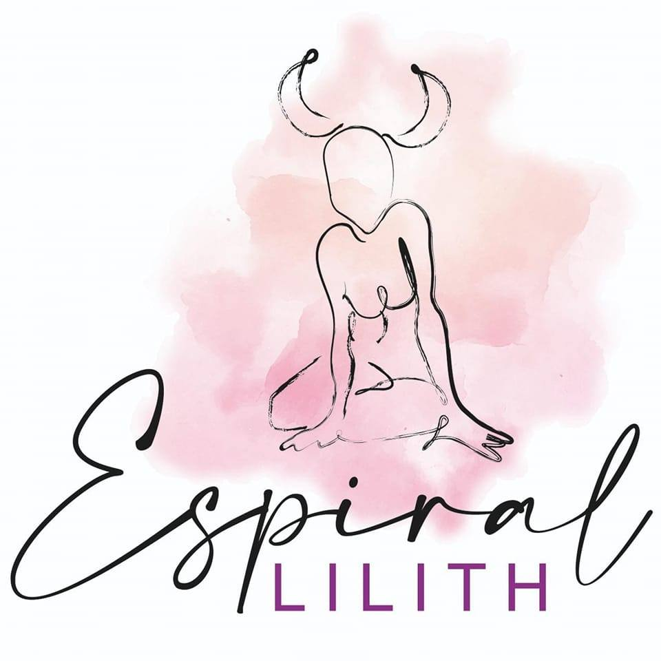

Explora tu Interior
La numerología es una herramienta ancestral que te permite conocer tus fortalezas, debilidades, y el propósito de tu alma. A través del estudio de los números asociados a tu vida, puedes desvelar patrones y tendencias que te guiarán en tu camino.
